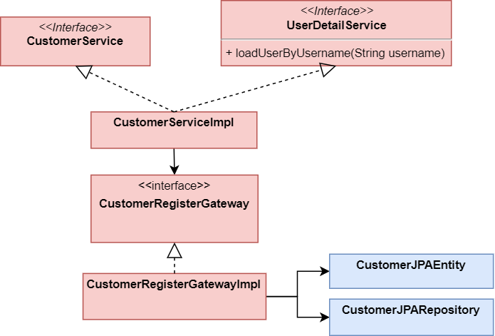

Architecture Spring Security
Avant de coder la mise en place de la sécurité dans notre application, il est important de comprendre l'architecture mise en place par Spring pour réaliser l'authentification.
Comment accéder à une ressource privée
L'authentification permet de restreindre l'accès une ressource qu'aux utilisateurs authentifiés. Pour ce faire Spring utilise le système suivant

- Lorsqu'une requête arrive, elle est interceptée pour authentifiée ou vérifier si l'utilisateur est authentifiée.
- Si l'utilisateur ne réussit pas cette étape, alors une exception est levée par le bloc d'authentification. Par conséquence, le Contrôleur n'est pas invoqué, l'utilisateur n'accède pas à la ressource.
- Si l'utilisateur est correctement authentifié, alors l'authentification déclenche l'appel au Contrôleur qui va retourner le contenu demandé.
Détail du bloc d'authentification
Après avoir décrit le fonctionnement (reussite/echec) regardons en détail le fonctionnement du bloc d'authentification. C'est la partie la plus complexe, mais sa compréhension est priomardiale.

- Lorsque la requête arrive elle est tout d'abord intercepté par la Security Filter chain. C'est une série de filtre qui vont vérifier si l'utilisateur peut accéder à la ressource.
- Parmi ces filtres, un permet de vérifier l'authentification. Pour ce faire il va appeler un
AuthenticationManageren lui fournissant un objet de typeUsernamePasswordAuthenticationTokenconstruit via la requête. - L'
AuthenticationManagerva appeler unProvider(e.g.AuthenticationProvider) qui retrouver l'utilisateur (chez nous en base de donnée). Pour ce faire, on doit lui injecté lors de son initialisation unPasswordEncoderet unUserDetailService. - Finalement si l'utilisateur est bien présent en base de données, une
Authentificationest retournée. Elle est stockée dans leSecurityContext - Et le dernier filtre passe la main au Contrôleur
Définitions
Security Filter Chain
Lorsque la requête est envoyé par l'utilisateur elle est interceptée par la Security Filter Chain qui est composée d'une série de filtre.
L'Authentication Manager
Il crée un Authorization ou lève une exception.
Si l'authentification n'est pas réussite une exception est levée, par conséquence le contrôleur n'est pas appelé et la ressource n'est pas accessible.
public interface AuthenticationManager {
Authentication authenticate(Authentication authentication) throws AuthenticationException;
}
. Cette interface est composée d'une seule méthode qui prend en paramètre un Authentication fournie est valide :
- Renvoie une
Authentication(normalement avecauthenticated=true) si elle est confirmée - Lancer l'exception
AuthenticationExceptionsi elle n'a pas pu être vérifiée
A noter, que notre requête doit donc être transformé en un objet de type Authentication, par exemple UsernamePasswordAuthenticationToken pour pouvoir être passé à l'AuthenticationManager.
DAOAuthenticationProvider
Permet d'authentifier via un username et un password
Pour fonctionner il necessite qu'on lui injecte lors de sa construction un PasswordEncoder ainsi qu'un UserDetailService.
UserDetailService
Charge un utilisateur (nous en base de données) et le retourne sous la forme d'un
UserDetails
public interface UserDetailService {
UserDetails loadUserByUsername(String username) throws UsernameNotFoundException;
}
Pour pouvoir récupérer un utilisateur en base de données, il va falloir lui "fournir l'accés" et coder nous même le corps de la fonction. En d'autre terme, cette fonction va être implémenté dans notre ``CustomerServiceImploù elle va appeler la gateway puis transformer l'entité domaine enUserDetails`.
